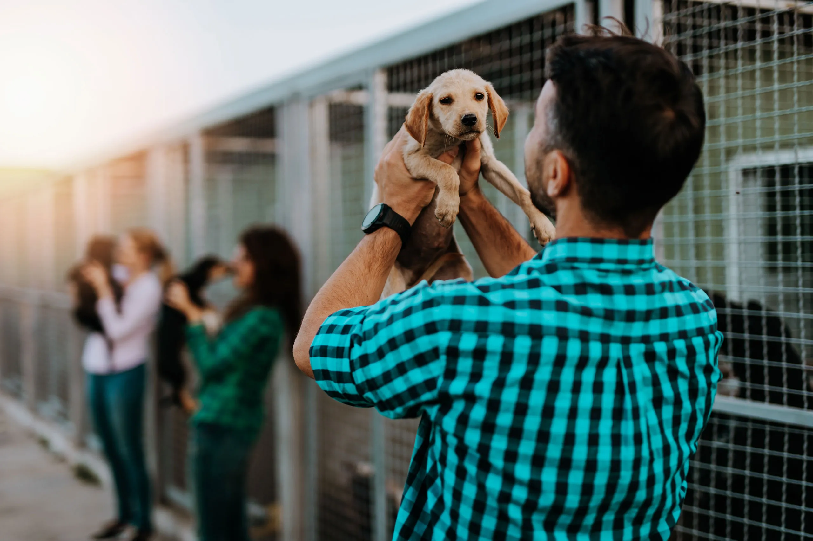

За много хора костенурката е мило и симпатично животно, предизвикващо желание да бъде закриляно и обгрижвано.
Но тя също е диво животно, нуждаещо се от своята естествена среда дори повече от други видове животни. Като защитени от закона, бързо намаляващи
и на места изчезващи е важно да бъдем отговорни и да им помагаме да оцеляват в природата, а не да ги отнемаме и гледаме в плен в своя дом, дори да
има най-прекрасните условия в него. От 2017 г. Центърът за костенурки стартира своята програма за осиновяване по примера на редица зоопаркове и подобни
центрове в Европа и по света. Бебетата се осиновяват за срок не повече от три години, след което идва момента на разселването им в природата.
Има много котки без дом при нас, които се нуждаят от любов. Осиновете едно приятелче от тези, които нямат възможност да бъдат обичани както други котки. Бъдете човекът, който ще промени съдбата им и ще превърне живота им в мечта. Най-добрите и спокойни котки са при нас, чакащи правилния човек. Възползвайте се от нашите предложения и спасете своя пухкав приятел.

Кучето е най-добрият приятел на човека. Вземете най-добрия си приятел при нас. Всеки заслужава да бъде обичан. Имаме голям набор от различни видове кучета, както породисти, така и улични, които никога не са усещали чувството да бъдеш обичан. Животни, на които съдбата им не зависи от тях, затова стоят в очакване на намерят своя дом.